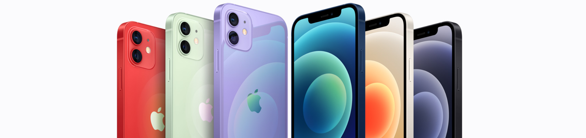

QYY's Homepage
Life consists not in holding good cards but in playing those you hold well.
Apple Has Great Products But Terrible Translations
Apple’s iPhones, iPads and Macs have conquered the world, and its official website is stunning with delicate design and creative wording.
However, its Chinese website is far from satisfactory. Actually, Chinese translations on the official website of Apple have been jokes again and again. 
Take the example of the latest translation of iPhone 6, the original text “Bigger than bigger” was literally translated into “比更大还更大”, which is awkward and ungrammatical. After receiving a lot of laughter and criticism on the Internet, the translation was later improved to be “岂止于大”, which means “there is much more than just bigger”.
Maybe literal translation is regarded as being authentic by someone in Apple, but unfortunately, like the differences between many languages in the world, generally the distinction between English and Chinese is distinct (isn’t this sentence very Apple?). Anyhow, Apple’s literal translations have made some people doubt whether Apple tries to “re-invent” the Chinese language.
A worse guess about this phenomenon is that Apple doesn’t have enough good translators, which is very possible, because it’s hard to imagine that such bad translations would appear time and time again while a translation master is involved.
Here are some examples of translations once published on the Chinese official website of Apple, the English sentences behind them are translated by me on the basis of the Chinese version:
- 信息。真的笑，笑出声。Messages really laugh, and laugh out loud.
- 开发者的大事，大快所有人心的大好事。Big thing for developers, big good thing that cheers all the people greatly.
- 全新iPhone现已问世。全新iPhone也已问世。Brand-new iPhone has come out now. Brand-new iPhone has also come out. (Referring to iPhone 5S and iPhone 5C respectively.)
- 父亲节好礼，让他每天越开越开心。Nice gift for Father’s Day, which makes him happier when he is more open every day. (This translation simply doesn’t make sense, I’ve tried my best to understand and translate it.)
- 让妈妈开心的礼物，开了又开。A gift that makes mother happy, letting her open and open again. (Also doesn’t make sense.)
Now see the original English texts to know the real meanings:
- Actually LOL. OL.
- Huge for developers. Massive for everyone else.
- Introducing the new iPhone. And the new iPhone.
- A Father’s Day Gift , He’ll open every day.
- A gift mom will love opening. Again and Again.
Moreover, just improving translation is not enough for Apple’s Chinese website, as its original copywriting does not fit Chinese market well, compared to those of local smartphones like Xiaomi and Meizu. I’ve written about this in a Chinese post more than 2 months ago.
A man called Ove
One love in one Life, one world owns by one man.
I first had a chance to read the book. I was touched by the true love between Ove and his wife, then I watched the movie. After all of these learning, here I write this blog.
What’s Ove’s life?
Every time when happiness comes to him, a bad thing may following.
Ove’s mother died when he was young. His father raised him with hard work. When He graduated from high school, he got an excellenct score. His father was so pround of him. So his father show his son’s school report to all of his fellow worker. Then the tragedy happened. The father was killed by a train.
So Ove quited the school, and replace his father’s place and to be a worker. His hard work earned him the boss’s accept. He was so happy. Then he was framed by one worker who was jealous him. So the boss fired him.
Ove lost job, he had no choice but be a cleaner. Here life gave him another hope. He met the girl, his true love. Then they fall in love with each other. Then they get married. Then she was pregnant. But, an accident happened, the girl was miscarried in the car accident. And the doctor told him that she would never had another baby.
So Ove want to fight back. Not for him, but for his love!
Here came the stubborn man, who is mean but has warm heart inside.
Well, if you get interested in this movie or book. I suggest you take action. I hope you can share your feeling after you watch them.

Yingyu Qin
UI designer/Art designer